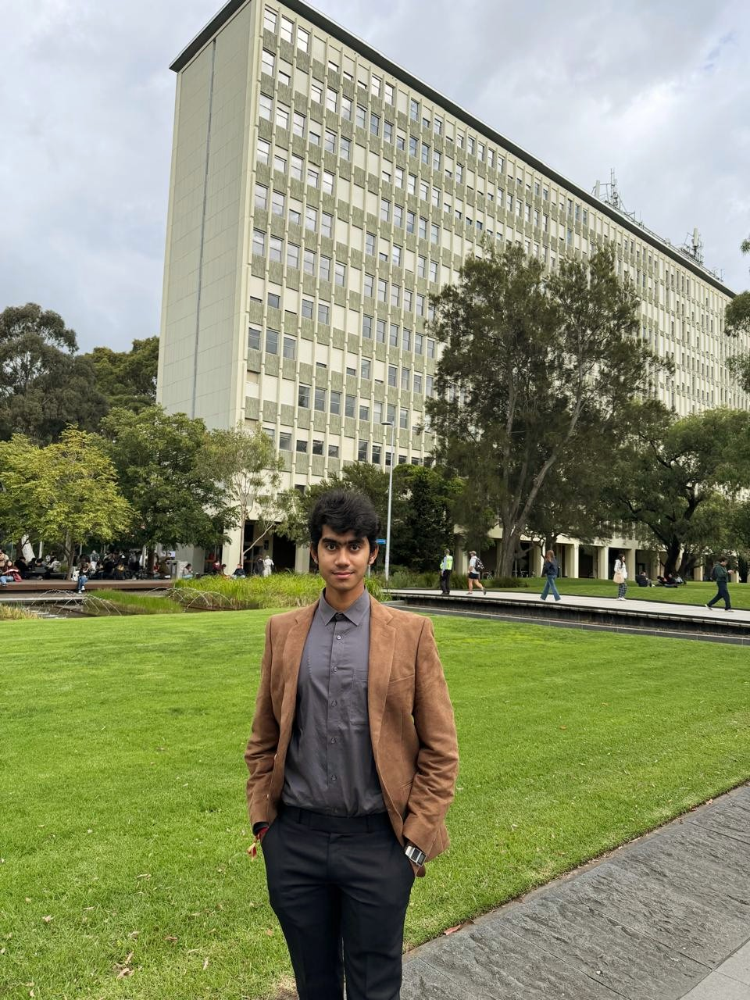

I turn dense, messy things — policy documents, grocery receipts, raw data — into something a person can actually use. First-year Computer Science student at Monash University, specialising in Data Science & AI, with a minor in Cybersecurity.

"I'm passionate about solving real-world problems through data, logic, and creativity."
I'm a first-year Bachelor of Computer Science student at Monash University, Clayton, specialising in Data Science and Artificial Intelligence with a minor in Cybersecurity (WAM: 82.5, GPA: 3.75/4.0). I work mostly in Python, with a focus on NLP and AI-driven pipeline engineering.
What I care about is access — taking things that are technically correct but practically unusable (a 40-page policy document, a blurry grocery receipt, a dataset full of edge cases) and engineering a clean path through them. That's the thread running through every project I've built so far, from a solo NLP tool to a hackathon AI pipeline shipped with a team.
Outside of coursework, I'm a published research author on Zenodo, and I've picked up leadership experience as Deputy Head Boy and HR process exposure through an internship at Dr. Reddy's Foundation. I'm currently looking for a software or data internship to keep building.
Complex systems should still be usable by the person who didn't build them — whether that's a citizen reading policy or a diabetic checking a recipe.
From solo project lifecycles to hackathon pipelines, I prefer owning a problem from design through to a working result.
Published research on data-driven decision-making, applied directly: validate the output, handle the edge case, ship something that holds up.
A tool that analyses government policy documents and translates dense legal language into plain-English summaries for everyday citizens.
Applied NLP techniques to parse and extract key information from lengthy policy texts, then built data visualisation dashboards to surface policy trends and key statistics for end users.
Managed the full project lifecycle solo — from design through implementation.
An AI-driven app that scans grocery receipts, auto-populates a real-time pantry, and generates healthy, diabetic-friendly recipes with full nutritional breakdowns.
Engineered the receipt-to-pantry pipeline using Gemini 2.5 Flash Lite to extract and categorise grocery items from raw receipt images in real-time, and cut API latency and token usage with custom PIL image preprocessing — resizing, compression, colour-space conversion.
Designed strict output validation for clean, standardised data, and built prompt logic to handle real-world mess: unit conversions, brand-name filtering, line-item aggregation.
One month in Hyderabad assisting HR operations — employee records, resume screening, and candidate coordination — with exposure to compliance workflows in a large nonprofit.
Represented the student body at official functions, acted as primary liaison between students and administration, and coordinated student-led events.
"Importance of Data Science in Decision Making" — examining how data science and statistical methods drive evidence-based decisions across industries.
Attained a perfect 100% score in a subject, ISC Year 12 (Humanities with Mathematics).
Open to software and data internships. The fastest way to reach me is email.